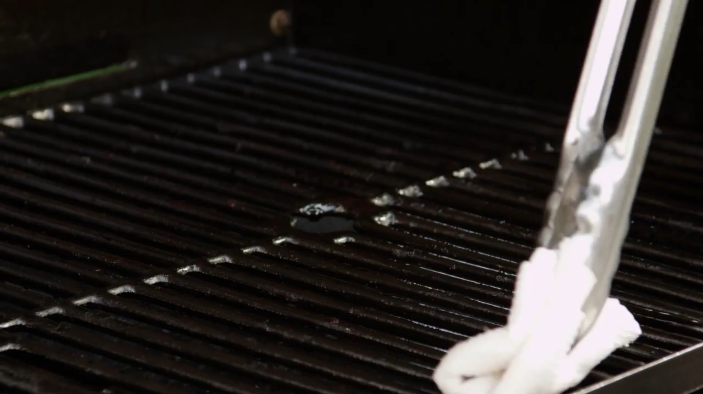
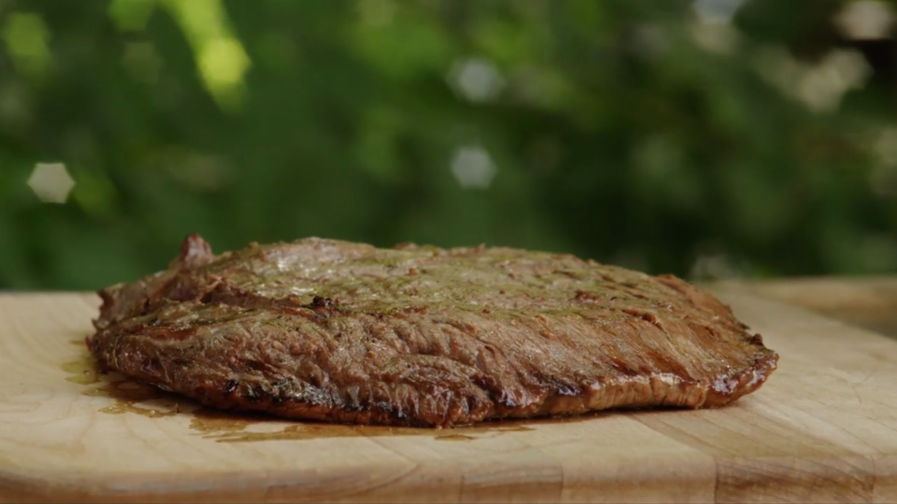
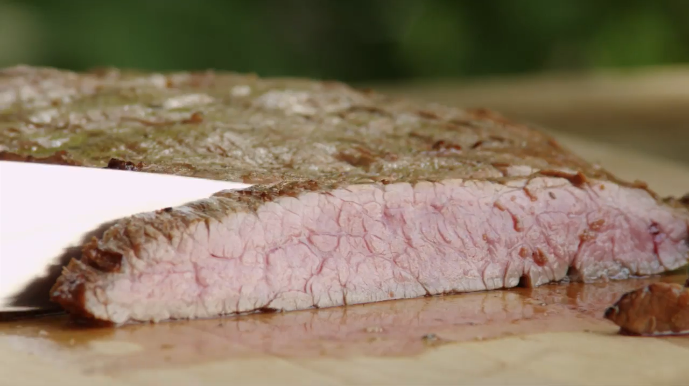

Simple luxery recipes for busy people
Marinated Flank Steak
What is Flank Steak?
Flank steak is a lean, somewhat tough but flavorful cut of beef that benefits from the tenderizing effects of a marinade. It is best cooked medium rare and thinly sliced at an angle across the grain of the meat. Prepared this way, marinated, cooked quickly at high heat, and thinly sliced, flank steak practically melts in your mouth.
Nutritional Info
| 275 calories | 22.5g total fat | 27mg of cholesterol |
| 935mg of sodium | 3.4g of carbohydrates | 14.8g of protein |
Ingrediants
For 6 servings
Directions
Get a shallow glass dish.

Pour the following into the dish: ½ cup vegetable oil, ⅓ cup soy sauce, ¼ cup red wine vinegar, 2 tablespoons fresh lemon juice, 1 & ½ tablespoons Worcestershire sauce, 1 tablespoon Dijon mustard, 2 cloves minced garlic, and ½ teaspoon ground black pepper.

Mix well.

Place the meat in the dish. Flip the meat around until it is thoroughly covered in the marinade.

Cover the dish and refrigerate.

Wait 6 hours.
Preheat grill at medium-high heat.
Soak a paper towel in vegetable oil and spread the oil on the grates of the grill.
Place steak on the grill. Cook 5 minutes per a side or until desired doneness.

Let steak sit for 5 minutes.
Cut the steak into strips accross the grain.
Done!